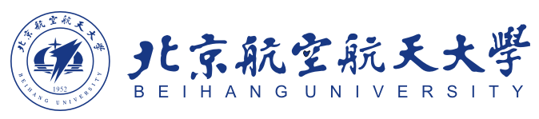
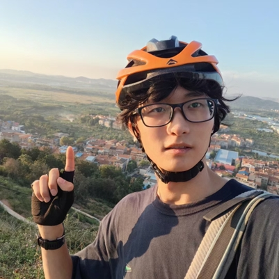

Hi! I am Xiaoyu Liu (Chinese name: 刘晓煜), a senior undergraduate student at Wuhan University of Technology (WHUT), majoring in Measurement and Control Technology and Instruments. I have been admitted (via postgraduate recommendation) to Beihang University (BUAA) for a Master's degree in Electronic Information, starting Sep. 2026. My experience spans robotic navigation, autonomous driving systems, and embedded hardware development.
Detailed Profile (详细个人介绍)
I have interned at Momenta as a System Integration Architecture Intern (Nov. 2025 – Mar. 2026), working on OTA delivery of intelligent driving software for Nissan N7, and at the ZJU Huzhou Institute as a Robot Navigation Algorithm Intern (Jun. – Aug. 2025), researching autonomous navigation for small vehicles in GNSS-denied environments.
I led several award-winning projects: the Venlo Greenhouse Roof Cleaning Robot (National Innovation Program, National Excellent Conclusion; 1 EI paper, 1 patent), an AGV stacking vehicle (National 3rd Prize, China Robot Competition & RoboCup China), and a drilling robot (National 1st Prize, China Undergraduate Mechanical Engineering Innovation Contest).
Hi！我是刘晓煜，武汉理工大学测控技术与仪器专业本科生，已推免至北京航空航天大学电子信息专业（硕士，2026级）。 我有丰富的机器人、嵌入式和自动驾驶工程实践经验，曾在 Momenta 从事智驾软件集成工作，在浙江大学湖州研究院研究机器人导航算法。 主持完成国家级大创项目（国家级优秀结题），发表 1 篇 EI 论文，申请 1 项发明专利。
Education
-
Sep. 2026
—
Jul. 2029
(expected)
School of Electronic and Information EngineeringM.Eng. in Electronic Information (Postgraduate Recommendation / 推免) -
Sep. 2022
—
Jul. 2026School of Information EngineeringB.Eng. in Measurement and Control Technology and Instruments (测控技术与仪器)
Internship
-
Nov. 2025
—
Mar. 2026 System Integration Architecture Intern (系统集成架构实习生)负责东风日产 N7 车端智驾算法软件 OTA3 的集成、发版、交付工作。
System Integration Architecture Intern (系统集成架构实习生)负责东风日产 N7 车端智驾算法软件 OTA3 的集成、发版、交付工作。
• 参与日产 N6/N7/N8 车型（qc8778、orin N、orin Y 平台）CPU、内存等资源性能优化，根据数据定位系统问题
• 开发底软适配自动化流水线、性能测评组件和系统分析工具，开发云端部署配置：统一升级 MF、SOC、MCU 等产物
• 利用 Claude Code 开发飞书机器人和 10+ 自动化工具，包括首车闭环、自动编译部署、分析路测数据，进行问题分类等 -
Jun. 2025
—
Aug. 2025Robot Navigation Algorithm Intern (机器人导航算法实习生)GNSS 拒止环境下小型运载车辆的自主导航与控制算法研究。
• 基于 RPP 纯跟踪算法，设计了一款应用于阿克曼底盘的局部规划器，解决传统 RPP 算法在曲率突变路段的偏移问题
• 辅助设计、装配六组机器人，编写中间件、辅助完成课题组实验，记录和分析实验中传感器的反馈数据
Publications
-
'" />

Venlo Robot